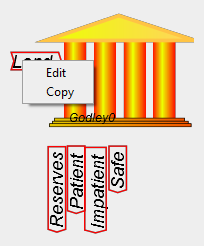
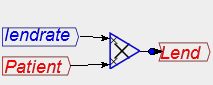
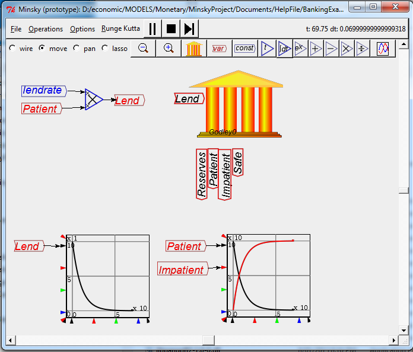

Right-click on the inputs and outputs of a Godley Table and choose "copy" from the drop-down menu:

Place the copied flows and accounts and place them away from the table. Then wire up your definition there:

This now results in a much neater model. The same process can be used to tidy up graphs as well:

A more complex model would have many more flows, and these in turn would depend on other entities in the model, and be time-varying rather than using a constant "lendrate" as in this example--see the Tutorial on a Basic Banking Model for an example. This example uses the engineering concept of a "time constant", which is explained in the next section.